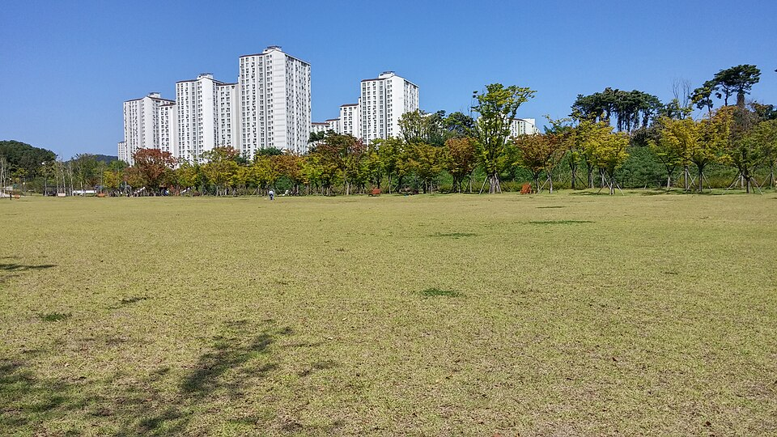

경기 수원 영통구는 관리 중인 중·고등학교만 32곳입니다. 태장고등학교·매탄고등학교·영덕고등학교·청명고등학교 같은 고등학교와 영덕중학교·망포중학교·원천중학교가 구 안에 흩어져 있습니다. 영통동·망포동 쪽과 광교·이의동 쪽은 같은 구라도 오가는 데 시간이 드는 거리라, 학원 시간표에 저녁이 통째로 묶이는 학생은 집으로 오는 1:1 수학과외나 영어과외를 따로 찾게 됩니다.
오늘은 영통구로 직접 찾아가는 선생님들 가운데 과목이 다른 두 분을 소개합니다. 한 분은 기초 개념부터 되짚어 올라가는 수학 선생님, 한 분은 수원 지역 학교 수업을 오래 본 영어 선생님입니다.
영통구에서 중등 수학과외를 찾는 이유는 대개 비슷합니다. 학원 진도는 앞으로 나가는데 학생은 어느 단원에서 이미 멈춰 있는 경우입니다. 이 선생님은 지금 배우는 단원부터 시작하지 않고, 막힌 자리까지 거슬러 올라가 개념을 다시 세운 뒤 진도를 붙입니다.
수업마다 학습 진도표와 오답노트를 함께 관리하기 때문에, 무엇을 얼마나 했는지가 종이에 남습니다. 정기적으로 학부모 상담과 피드백을 진행합니다. 방문 수업만 하는 선생님이라 수업은 학생 집에서 진행하고, 영통구 외에 용인 기흥구도 방문합니다. 수업 가능한 요일과 시간대는 정해져 있으니 상담 때 먼저 확인하시는 편이 좋습니다.
이ㅇ경 선생님 상세 프로필 →영통구에서 고등 영어과외를 찾을 때 걸리는 지점은 내신과 모의고사가 서로 다른 공부처럼 느껴진다는 것입니다. 이 선생님은 두 가지를 따로 두지 않고 어휘와 구문 독해라는 같은 뿌리에서 풀어 갑니다. 학교 수업과 출제를 직접 해 본 경력이 있어 학교 시험지의 문항 형태를 기준으로 준비합니다.
초·중등은 듣기·말하기·읽기·쓰기 네 영역을 다루는 교재와 구문 독해를 함께 갑니다. 고등은 내신과 모의고사 지문을 소화하는 쪽에 무게를 둡니다. 수업 사이에는 카카오톡으로 질문을 받고 피드백을 주기 때문에, 주 2회 수업이라도 사이가 비지 않습니다. 권선구·팔달구·영통구를 함께 방문합니다.
유ㅇ안 선생님 상세 프로필 →학교마다 진도와 시험 범위가 달라서, 학교별로 준비법을 따로 정리해 두었습니다.
👉 영통구 수학과외 선생님 · 영통구 영어과외 선생님 · 영통구 관리 학교 전체 보기